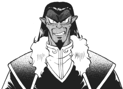

Regular FanFics: E-H
|
This is the regular Tenchi fan fiction section. (No X-overs, Lemons, or tangental
work) All stories are sorted by either the author's last name or their pen
name. Go here if you would like your stories published
in this archive. |
New * A-B *
C-D * E-H * I-K *
L-M * N-Q *
R-S * T-Z |
E
Eaerth (teftenchi@yahoo.com)
-
Time Enough for Tenchi
Tenchi, now nearing his 20th birthday, finally decides what to do
about the house full of women. (Multipart) -5/28/2002
John Eden
(rwdacus@mccallie.org)
-
Sweet Revenge
A small boy wanders into Washu's lab. Is he friend or is he foe? 57KB
-9/10/2000
Elena (SammyHChan@aol.com)
-
The Hardest of Truths
Fourteen Years after MNE, Mayuka will have to uncover a lost part
of herself and in the end save those she loves (Multipart)
-3/6/2000
Elemen the Bard
(king_elemen@hotmail.com)
Luci J. Emerson
(WashuChibi@hotmail.com)
-
Unending Fates
A tale of no end to Washu's suffering. (Multipart) -2/19/2002
Chris Engler
(RoyalMangaFreak@hotmail.com)
The Entry Plug
(lateralus_metatron@hotmail.com)
-
These are our souls, Shattered as Glass
Tenchi, Ayeka and Ryoko perform a task of Introspection, and decide
to change the way things are once and for all. 26KB -4/9/2001
-
Stained Hands
Tenchi and the gang get caught up in a Japanese government crime war,
oh and Tenchi chooses. (Multipart) -4/23/2001
-
Jesus bleibet meine freude
A short tale about Aeka and Tenchi's desire to be free of loneliness.
28KB -5/28/2001
-
June Mermaid
The time when the cycle began. (Multipart) -11/7/2001
-
Malevolent Veracity
When one becomes one with another... when the line between love and
pain fades... when does she choose to live? 15KB -1/28/2002
Vincent M. "Max Raven" Eskilsson
(8thlegion_max@mail.bip.net)
and John
Vincent M. 'Max Raven' Eskilsson
(_8thlegion_max@mail.bip.net)
Christopher Alexan Ess
(caess@unity.ncsu.edu)
The Eternal Lost Lurker
(lurkerdrome@worldnet.att.net)
The Eternal Wanderer
(Mochocki@kcoline.com)
Eve (Mysunshinemar@aol.com)
Rick "The Mirror Knight" Everts
(MirrorKnight@collegeclub.com)
Evil Asian Genius
(cori_ohki@hotmail.com)
-
Her Father's Daughter
Getting Washu out of the way was one thing; Kagato discovers dealing
with a young Ryoko might be more than he can handle. 31KB -5/1/2002
-
Second Chances
An old enemy returns. A new girl joins the household. All at the same
time! Kagato returns...as a girl? (Multipart) -5/1/2002
Evil Dragoness
(EvilDragoness@mailcity.com)
The Evil Duckie
(Sailorgoof66@aol.com)
Evileyez
(evileyez8@hotmail.com)
The Evergreen Cortex
(the_evergreen_cortex@yahoo.com)
-
Wazzup?! - Part 1
Some comedy, some action, mostly drama, and a slight necessary twang
of lime. 294KB -11/5/2000
Brandon "Tiger Storms" Everson
(Beverson@home.com)
Mark Eymer
(Saotome@micron.net)
F
Andrew "Alighthawk" Falcon
(a.falc@verizon.net)
Justin Felder
(attitude29018@hotmail.com)
-
A Walk in My Shoes
Ryoko and Ayeka switch bodies. Mature content, but not a lemon. 42KB
-8/10/2001
-
School Days
Ayeka and Ryoko are still in love with Tenchi...only they aren't fighting
over him and they're his teachers. 38KB -8/10/2001
Dan "Dark Fenton" Fenton
(Dfenton432@aol.com)
-
Angel of Death
A noble space pirate named Nashuro who is added to the Tenchi cast.
7KB -9/22/2000
Mike Fenton
(mpfenton@hotmail.com)
Navaash Fenwylde
(navaash@mail.wsu.edu)
Fire Cat
(fire_cat15@hotmail.com)
Firefly
(firefly1@hotmail.com) and
Scuzzy (lair@trinidad.net)
-
Decision
A short fic whre something intresting happens. 5KB -7/11/1998
Fire's Glory (Kprofsea@aol.com)
-
The Disapearence
What's happening when suddenly everyone in the Masaki house starts
disapearing? (Multipart) -9/25/2001
Michael "Omega" Fitz-Gibbon
(MIKEFG883@aol.com)
-
Starlight Destiny
A man named Satuzama kidnaps Ayeka, hoping to get his hands on an
ancient Jurain treasure called the Ring of Destiny. (Multipart)
-11/27/2000
Fish (fish_stomp@yahoo.com)
-
Nuits de Rêve
A static summer night awakens memories from Tenchi's past. 7KB
-1/15/2001
Flare (RyokoStar1@aol.com)
-
Tenchi Muyo! Et-Al
Tenchi has a dream that leads to questions of Ryoko's family. (Multipart)
-11/13/2001
Pierce "Spyboy" Flemming
(Spyboy_01@yahoo.com)
-
The Hunter: "A hero is born"
A geneticaly created boy is sent on a mission to try to stop an alien
race from taking over the universe. 34KB -10/8/2000
Trevor "Ultima Havoc" Flickinger
(tsaiyan@bellsouth.net)
Daniel Forke
(evldan@hotmail.com)
-
Tenchi Muyo! No Need for Blaine!
Blaine comes to find Tenchi in a very serious situation. Blaine thinks
up a way to help Tenchi. (Multipart) -7/30/2001
-
Tenchi Muyo, No Need for Extra Characters
Feng Tainnai crash lands not too far away from Tenchi's home. Apparently
he seems a nice guy thogh somethings are unclear. Then Tenchi has dreams
that seem too real... could they be the future? (Multipart) -11/11/2001
Frigidmagi
(frigidmagi@hotmail.com)
F.T.W.
(IchBinEineLeiche@aol.com)
-
The Jynx Project
The galactic police and Jurai royal familly bring a legendary
fighter and mage back from the dead in hopes to advance military forces.
(Multipart) -11/27/2000
-
K-Ronicles
The Follow up series to "The Jynx Project" (Multipart)
-11/27/2000
-
Relapse of the Wicked
A dark chapter in Epion's life is revealed and a battle begins. 12KB
-12/20/2000
-
Evil Deeds
Jynx and Kiyone must find Mihoshi, K and Sasami before all hell breaks
loose. 17KB -12/23/2000
-
Time Tricks and a Dead Bitch
Jynx figures out just how Cage set back time and uses it to bring
Sasami back from the grave. (Multipart) -12/23/2000
-
Blind
A student returns to Tenchi and Sakuya's school after a long 2 year
leave. (Multipart) -12/23/2000
-
The Final Fight for Jurai
Jynx and Tenchi's Friends Battle For Jurai's Throne. (Multipart)
-1/15/2001
-
The Echo Side
No one's really dead! 23KB -1/22/2001
-
Starry Farewell
Makido leaves the group, possibly for good. 26KB -1/29/2001
-
Makido's Murder
Mihoshi shoots Makido by mistake in the dark. 11KB -1/22/2001
-
Sasami's Confession
Continuation of "Indiffrent Discovery." 15KB -1/22/2001
-
The Flock Brothers
The gang meets the famous leaders of the notorious Black Bokken Gang!
43KB -2/20/2001
Fuzzy Bunny
(fuzzy_bunny@rocketmail.com)
-
The Night I First Loved You
An extrapolation from volume 2, episode #3 of the OAV of the time
spent in the tool shed, where Ayeka considers her thoughts for Tenchi. 38KB
-10/8/2001
G
Mike Gaheton
(shichigami7@hotmail.com)
-
The Choice is yours…Tenchi
Tenchi has to make a choice that will affect the relationship between
him, Aeka and Ryoko. He struggles to make a decision. (Multipart)
-2/26/2001
Anthony 'Kaiju' Garafalo
(Reptile118@aol.com)
Garasu
(omicron_ceti@yahoo.com)
-
One Special Day
After a bad dream, Ayeka reflects on her relationships both past and
present. 46KB -7/2/2001
-
Infinite Wills
The board is clear, and the players are introduced. (Multipart)
-4/23/2002
Tracy "Crikit" Garnett
(crikit@geocities.com)
Keath "That guy" Geranios
(SSGoten117@aol.com)
Geor-sama (Georsama@aol.com)
-
A Fallen Angel
Ryoko belives she's a fallen angel.she is in for a suprise.Just another
Tenchi and Ryoko fic with a slightly angsty feeling to it. 18KB
-9/22/2001
Geor-Sama
(Tiamt23@hotmail.com)
-
Fate
Tenchi realizes his fate. 27KB -11/13/2001
Nastassia Germain
(sassygirlnowand4eva@juno.com)
Dade "Argus Cromwell" Gifford
(cubone41@yahoo.com)
Locke Gilderthorn
(beergood@hotmail.com)
Max Gilliland (Ryoko39655@aol.com)
and Rhys Doyle (Blugoon@aol.com)
Girl-Incognita (Ryuki07@aol.com)
-
Chaos
Tenchi realizes his love for one of the girls, but more important
matters are at hand. (Miltipart) -5/6/2002
Gitaro the Metalhead
(Gitaro@hotmail.com)
Jason Goodman
(kingvegeta80@yahoo.com)
-
Bonds
A story about the bonds of friends, of family, and of lovers. (Multipart)
-11/19/2001
Gabrielle Gorney
(Zooka11@aol.com)
-
No Need For An Angel! - Part 1
Tenchi and the gang get what a piece of heaven is like and Tenchi
falls in love with this mysterious angel, but he doesn't realize that he
has put himself in a bad position with helping to save the world from evil.
56KB -3/5/2001
Angel "Crystal Heart" Gouker
(AAngel942@hotmail.com)
Graffito Tag
(graffitotag@hotmail.com)
-
Tenchi Porno: A satire
A very unique satirical look at Tenchi lemon fics. 17KB
-5/6/2002
-
Tenchi Muyo Sexcom
What do lemon fanfiction characters do all day? Have wacky adventures,
obviously! (Multipart) -5/6/2002
-
Tenchi Alternate Universe
Mihoshi meets her favorite tv star 'Catch Phrase Man', who, along
with Tenchi, must make their way through an alternate dimension. 18KB
-5/6/2002
-
Strip Clue
A hilarious "Clue" style murder mystery. Who could be responsible?
Heh heh. 20KB -5/6/2002
Andrew "Kain The Seeker" Graham
(Kaintskr@aol.com)
Rhiannon "Aiyh-Sa" Grainger
(karen.grainger@btinternet.com)
-
"The Four Goddesses"
Washuu finds the truth about her past, and prepares to fight her sister,
Tokimi. 27KB -5/30/2002
The Great El Dober
(andrelaval@hotmail.com)
-
A Second Chance
Can Ryoko and Washu ever go back to the way they once where? 19KB
-9/20/2001
-
For Reasons That Escape Me
Sequel to 'A Second Chance'. Will it all work out, after all Ryoko
is not the only one with a second chance. 89KB -9/20/2001
-
The Prodigal Son
Sequel to 'For Reasons That Escape Me'. Can Ryoko fend off this new
threat? Does she have any right to? 192KB -9/20/2001
The Great Xarr_Dragon
(XarrLordDragon@AOL.com)
Aryn Griffis
(sockmonkey67@yahoo.com)
-
Rebirth
Washu is reborn to erase painful memories of her past. 8KB
-6/21/2000
Rick Griffith (rmgsrvc@home.com)
Matt P. Griffiths
(tiger_cow@yahoo.com)
-
"Death of a Scientist"
The family is thrown into confusion when Washu decides to leave after
accidentally hurting Ryoko. 119KB -5/21/2001
-
"Kith and Kin"
Set seven years after the start of the series. Ryoko and Tenchi's
normal lives are interrupted by a vengeful rival. 61KB -5/21/2001
GrimStalker
(mr_taker@hotmail.com)
Grover396 (Grover396@aol.com)
Gum Girl
(gumgirlus@yahoo.com)
H
Heather Haag
(girlwithaattitude13@yahoo.com)
Ashleigh "Csm" Haavisto
(lilserena20@hotmail.com)
-
Summer Breeze
Ayeka and Tenchi are married, and Kiyone starts to be nicer to Mihoshi.
(Multipart) -4/9/2001
Katana "Ryoko720" Habuki
(Ryoko720@aol.com)
-
"Tenchi Forever"
Aeka get't Tenchi. A reply to GenSao's challenge. (Multipart)
-10/17/1998
Robert "Pmasters" Hadley
(Pmasters@webtv.net)
Robert "Pmasters" Hadley
(Pmasters@webtv.net) and Barry
Mortichesky, Jr. (Flagg@hhs.net)
Hakubi Ryoko
(washuryoko@hotmail.com)
-
Yesterday
Tenchi has found his true love...but she's left, because of her fear
of hurting the others. Will Tenchi ever find his true love again? 17KB
-1/8/2001
Richard "Hounder" Hall
(rhall3@elp.rr.com)
Steven A. Hall
(bkvhw@earthlink.net)
Michael "The-Zorch" Haney
(zorch@the-zorch.com)
Dexter "An Ayeka Fan" Hannah
(cyn@micron.net)
-
Tenchi's Veracity
A Tenchi fanfic where some hardships occur, but Tenchi must make his
decision. Which one, Ayeka or Ryoko? (Mutipart) -8/1/2001
Happy Cabbit Konai
(happycabbitkonai@hotmail.com)
-
Pay the Price
Rather dark fic based in Shin Tenchi. (Multipart) -4/16/2001
Jeffery Harris
(JLHOnami@mchsi.com)
-
"Kime"
The Harem Saga - Episode 1: Tenchi submits to a hypnosis experiment
in Washuu's lab, with consequences for everyone. (Multipart) -5/31/2001
-
"We Belong..."
The Harem Saga, Episode 2: Tenchi must respond to demands imposed
by an imperial visitor. (Multipart) -9/22/2001
-
And If I Fall...
The Harem Saga, Episode 3: What happens after Tenchi graduates from
high school. (Multipart) -9/22/2001
-
Katanawoutsu
The Harem Saga, Episode 4: The future Emperor's first crisis. (Multipart)
-1/30/2002
-
Koodori
The Harem Saga, Episode 5: A light-hearted tale of a day in the life
of the Emperor of Jurai. 77KB -2/25/2002
-
"Songs From The Heart..."
A short story about a homework assignment. 19KB -9/27/2001
-
No Need For An Epiphany
Tenchi's rising frustrations require a cooling -off period- away from
home. 75KB -3/26/2002
Robert Hazelton
(nchabrier@yahoo.com)
-
Someplace like home
Ryoko wakes up to a bizarre situation: she's married to Tenchi and
Ayeka is dead. What's the mystery surrounding this strange twist of fate?
(Multipart) -5/31/2001
Ron Head (Crpller21@aol.com)
-
Silhouette Wings
A contination of the OVA series that brings back Kiyone and introduces
a new character. (Multipart) -11/28/1998
Samantha Heartless
(Wicked_lady@godmail.com)
Heero_YuyZ
(NinjaLord2000@hotmail.com)
Sarah "Lita" Hennessey
(lita_sailorjupiter_14@yahoo.com)
-
The Love of a Demon
Tenchi and Ryoko get married, Ayeka tells her deepest secret, and
Washu is locked in her lab. (Multipart) -2/25/2002
Ashley "Combo" Henry
(QTCherryBlossom@cs.com)
Adam Herbstreit
(tench_sama@bishoujosenshi.com)
Higeki-san
(Lazarus@quack.kfu.com)
-
Ten Muyou
A very good story that is based of the OAV Series, new characters,
and a twist to the OAVs. 109KB
David "Brearios" Higgins
(david_h80@hotmail.com)
-
Trials and Errors
An accident in the Tenchi household starts a chain of events no-one
expects. (Multipart) -1/14/2002
Ronnie L. "Nephlym" Hill Jr.
(nephlym@topseven.com)
Gregory Himes
(GD_Himes@yahoo.com)
Hiro F (HFenikubi@yahoo.com)
-
Divine Insurrection
Tenchi and company are about to start the fight of their lives (Multipart)
-5/5/2002
HLok (hlok@hotmail.com)
Jeremy "BloodWolf" Hodge
(LodossII@aol.com)
Horosha
(V_Bashaw@hotmail.com)
Horse_w_no_name
(horse_w_no_name@cheerful.com)
Todd Hortillosa
(Zetser0@yahoo.com)
Christina "Ryoko_Masaki_4_eva" Horton
(plastic_penguin22@hotmail.com)
David "Tenko_Masaki" Hoss
(spooky@webshoppe.net)
-
Ayeka's Big Day
Ayeka's fed up with Tenchi not noticing her,so she tries to get him
jealous.. it doesn't go exactly right. 18KB -2/12/2002
Rachel "Ryoko Hakubi" Hostetler
(dbzgirlus@yahoo.com)
Ian Howson
(Howsy@griffonlair.freeserve.co.uk)
-
Golgotha
Tenchi has to leave to rescue Kiyone, but never realises the horror
that awaits him as he struggles to make it home. (Multipart) -1/30/2002
Hospitaller
(Hospitaller@msn.com)
-
Patience and Trust
Ryoko finds herself trapped in an untenable arrangement. An angsty
one-shot in the future of the OAV universe. 11KB -1/14/2002
Hyas (ipaua@hotmail.com)